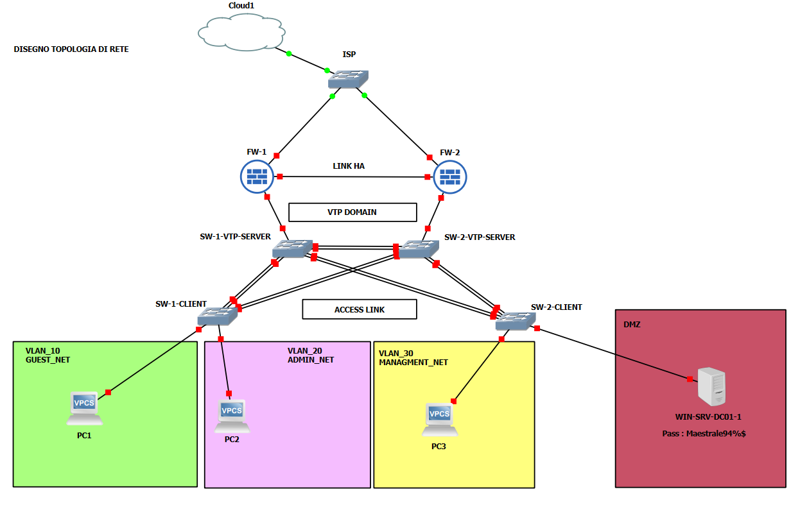

Panoramica del progetto
Questo repository documenta la progettazione e realizzazione di un laboratorio di rete completo, costruito interamente in ambiente virtualizzato (GNS3 + VMware Workstation Pro), che replica l'infrastruttura tipica di una piccola/media impresa con più sedi fisiche.
L'obiettivo è dimostrare, in modo pratico e interamente documentato, come progettare e implementare da zero una rete aziendale segmentata per VLAN, protetta da una coppia di firewall FortiGate in cluster ad alta affidabilità (Active-Passive), instradata attraverso uno strato gerarchico di switch Cisco (Distribution/Access) con protocolli VTP, STP e Port Channel, e completata da un dominio Active Directory su Windows Server con relativi client Windows 11 uniti al dominio.
Il progetto nasce con finalità didattiche e dimostrative: ogni fase — dalla progettazione teorica alla configurazione pratica — è tracciata passo dopo passo, inclusi i problemi realmente incontrati e le relative soluzioni, per renderlo replicabile anche da chi si avvicina per la prima volta a questo tipo di laboratorio.
Obiettivi
Clicca su ogni voce per espandere dettagli, screenshot e traccia delle configurazioni.
0. Progettazione della rete
0.1 — Definizione della topologia logica (Core/Distribution/Access, HA firewall)

Topologia definitiva validata: cluster HA FortiGate con link heartbeat dedicato, maglia Distribution/Access ridondata (VTP Server/Client) con collegamenti pronti per Port Channel, DMZ per il Domain Controller.
Traccia / note
Fase di solo disegno logico — nessun comando CLI eseguito. Validata la coerenza con gli standard reali (HA heartbeat su interfaccia dedicata, maglia Core/Distribution-Access, VTP Server ridondato).
0.2 — Piano di indirizzamento IP con metodologia VLSM
Da compilare: tabella VLSM, screenshot calcolo.
0.3 — Asset inventory completo
Da compilare: tabella inventory, output show version / get system status.
1. Configurazione switch
1.1 — Hardening (forte): AAA, SSH, gestione porte non utilizzate
Da completare.
1.2 — Configurazione VTP (dominio "LEONARDO")
Da completare.
1.3 — Configurazione STP
Da completare.
1.4 — Configurazione Port Channel
Da completare.
2. Configurazione firewall (FortiGate)
2.1 — Routing (subinterfacce VLAN)
Da completare.
2.2 — Firewall Policy
Da completare.
2.3 — DHCP
Da completare.
2.4 — Alta affidabilità (cluster HA)
Da completare.
3. Configurazione Windows Server
3.1 — Definizione Active Directory
Da completare.
3.2 — Domain Controller (DNS integrato)
Da completare.
3.3 — GPO
Da completare.
4. Deployment client
4.1 — Creazione VM master Windows 11
Da completare.
4.2 — Clonazione e Sysprep (×3)
Da completare.
4.3 — Join al dominio
Da completare.
5. Validazione e collaudo
5.1 — Connettività inter-VLAN
Da completare.
5.2 — Risoluzione DNS interna
Da completare.
5.3 — Lease DHCP per VLAN
Da completare.
5.4 — Test failover HA
Da completare.
5.5 — Autenticazione dominio multi-client
Da completare.
6. Documentazione
6.1 — README.md
Completato: panoramica, obiettivi, prerequisiti.
6.2 — Documento HTML/CSS di tracciamento
In corso — questa stessa pagina.
6.3 — Troubleshooting log
Da completare.